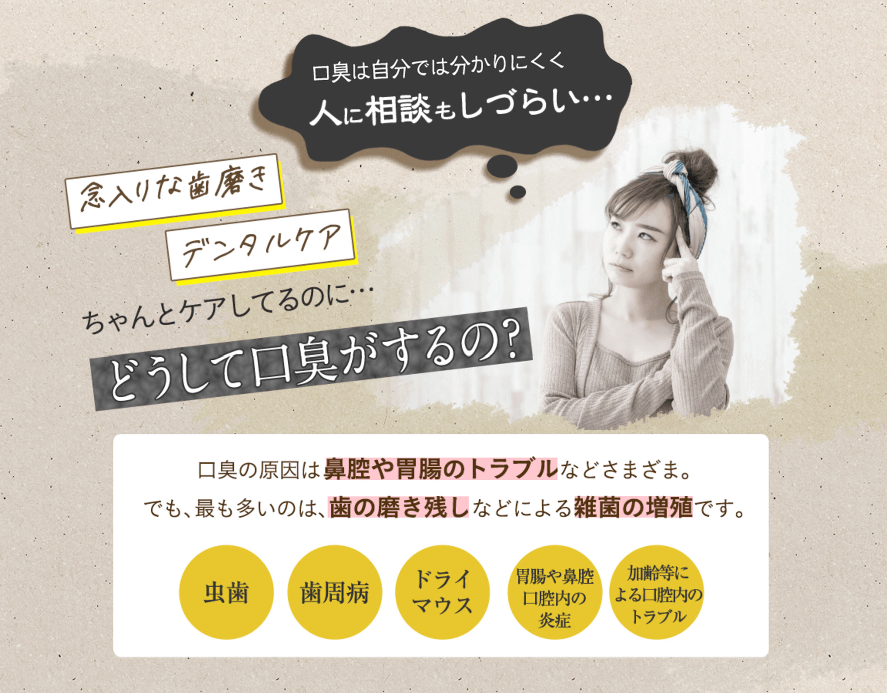
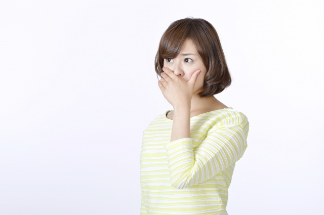
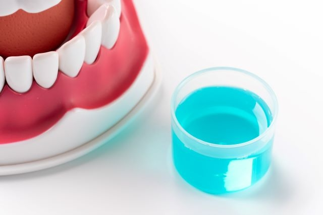
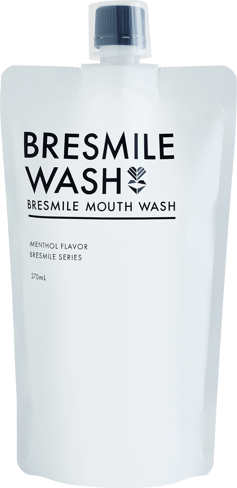
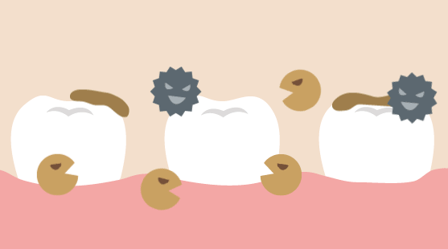
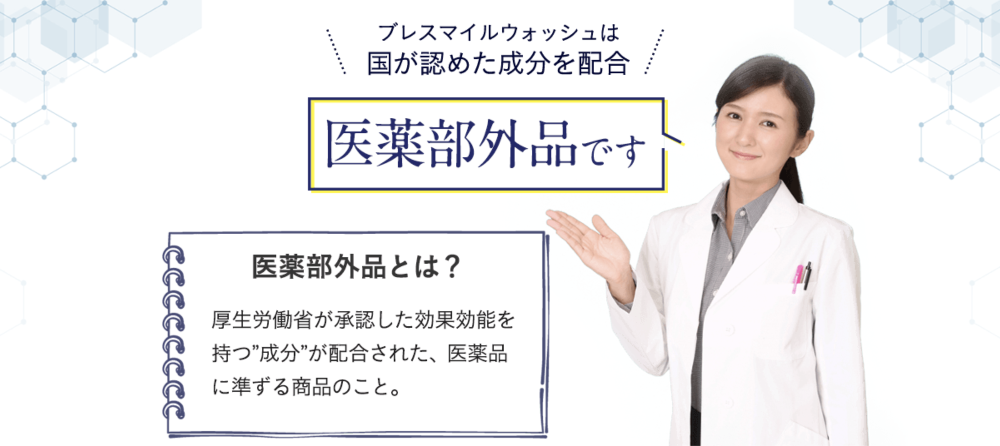
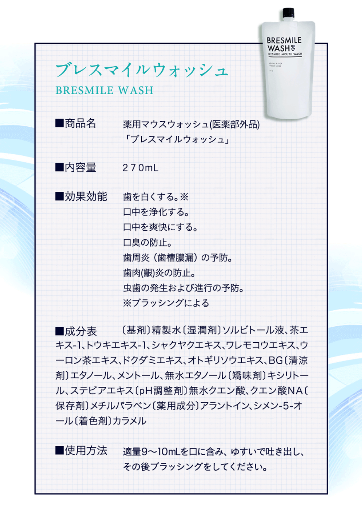
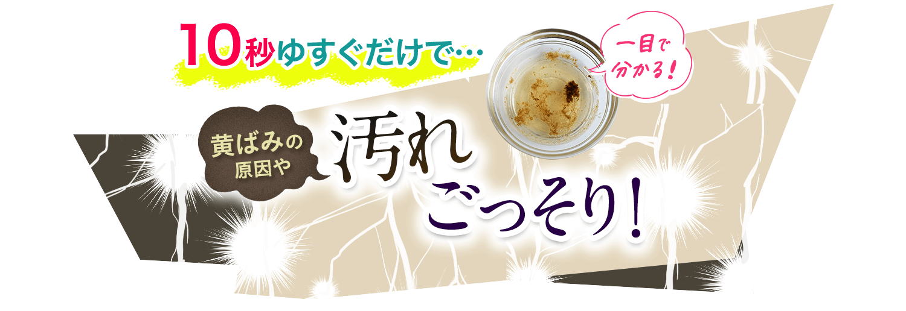
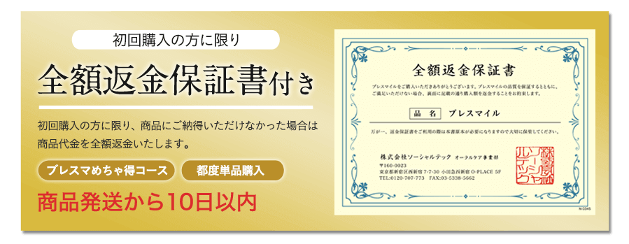

「ちゃんと歯磨きしてるのに…」
同僚とエレベーターで一緒になって、喋っていた時に微妙に距離ができたんです。。「私、何か嫌なこと言ったかな…」
原因が分かりませんでした。
会議でも、最初はなんともないのですが、少し距離が近づくと顔をしかめる事が何度かあって、、
「もしかして嫌われてる？」
考えても分からなくて、気分が落ち込んでいました。
でも、そんな時に、根本から口臭を解決できたのは、口臭対策専用の薬用マウスウォッシュ「ブレスマイル」のおかげでした。
>> 口臭対策専用の薬用マウスウォッシュ「ブレスマイル」とは？
「ちょっとにおうよ」と言われて気づきました
職場での出来事を友人に相談していると、気まずそうに、「ちょっとにおうかも・・・」と言われました。
近づかないとわからないみたいなんですが、かなりショックでした（泣）
たしかに、マスクのニオイはたまに気になっていましたが、１日３回の歯磨きはちゃんとしていたので、指摘されるまで口臭に気づきませんでした。
一体どうしたらいいの…
臭いに気付いてから、自分なりに色々試しました。ネットで調べたり、歯医者さんに聞いたり、歯科、口臭外科とたくさんの病院を周り、検査と治療をしてきました。
その結果、遠回りはしましたが、口臭はなくなり、「全然におわないよ」と友人も言ってくれて会社の同僚とも近い距離で話をしたり、マスク越しでも人と近くで話すのも気にならなくなりました^^
私が色々やった末に、一番効果的だった、口臭対策についてお話しします。
「なぜ、息が臭くなるの？」口臭の原因
口臭の原因には、
・虫歯や歯垢、歯肉炎、歯周病など
・口内の細菌（歯周病菌（嫌気性菌）などの口臭の原因菌）
・舌苔と呼ばれるベロの白い部分の汚れ
・歯磨きではおとせない食べかすやタンパク質汚れ
口の中に原因があることがほとんど。
少ないですが他には口臭の原因として、
・食べ物や生活習慣などで胃や腸の消化器官の不調
・扁桃炎や副鼻腔炎、蓄膿症、咽頭炎などの炎症
・ドライマウス、口呼吸などでの乾燥
・舌や歯の過剰な磨きすぎ
・疲れやストレス
・心理的口臭症
他にも、臭いの強い食品やコーヒー、アルコール類の摂取、タバコなどがあります。
ですが、やはり口臭の９割以上は、口内に原因があるといわれています。
どうやったら口臭がなくなるのか？
大事なのが、口臭のニオイの原因となる「原因菌の殺菌」と「タンパク質汚れの除去」です。食事をしたあとや歯磨きから時間が経つと、口の中のネバつきも気になりますよね。
その口の中のネバつきが細菌で、これが最も多い口臭の原因。
特に朝起きた時にねばつくのは、寝ている間にお口の中の細菌が増殖するからです。
その細菌が口の中にある食べかすなどのタンパク質汚れを分解した時に発生するガスが、口臭です。
気になって人前で話せない…
口の中のタンパク質汚れをキレイにして、ニオイの原因菌をきちんと殺菌することが、根本的な口臭対策に必要なことなのです。
私自身が口臭に悩まされてきて、色々調べて、色々試した中で、手っ取り早くて一番効果的だったのが、「医薬部外品の薬用マウスウォッシュ」です。
もちろん、普通の薬用マウスウォッシュではダメで、ポイントは、
・タンパク質汚れをきちんと分解、洗浄してくれる
・原因菌をきちんと殺菌してくれる
・効果が長続きする
・必要な常在菌まで殺菌しすぎない（刺激や薬剤が強すぎない、自然派の成分を使っているなど）
健康な細菌まで排除すると逆に口臭の原因になったり、体の不調の原因になったりもするので、この条件が必須。
そして何より、口臭予防ができることが大事です。

私が体感した中で、口臭を防ぐ効率的な方法としては、やはり一番は、条件を満たした薬用マウスウォッシュを使うことです。
薬用マウスウォッシュはどれがいいの？
いろいろ試してきた中で、一番良かったのが「ブレスマイルウォッシュ」という医療部外品の薬用マウスウォッシュでした。
たくさんの雑誌やメディアでも掲載されているので、知っているかもしれませんね。
他のマウスフォッシュのようにニオイをごまかすのではなく、口臭の原因菌の殺菌と、細菌のエサとなるタンパク質汚れを除去してくれるから、根本から防いでくれます。

医薬部外品の簡単な見分け方は、パッケージに「薬用」と書いてあるものなどです。
いろいろやってきて、「なかなかきれいな息が長続きしないな」と諦めかけていた時に、効果を感じられたものが「ブレスマイル」でした。
医薬部外品の口臭対策専用マウスウォッシュです。


口臭の原因から除去してくれるから、口臭が残らないんです。
口の汚れが目に見えて分かる
ブレスマイルの特徴の１つで、口の汚れが目に見えて分かるというものです。初めて使った時は軽くショックでした（笑）
歯磨きしていても取れていない汚れがこんなにあったのかと。。

使用後は、とにかく口内がスッキリして気持ちいいです♪
ホワイトニング効果
それにブレスマイルは歯を白くするも期待できるんです。※個人の感想であり効果を保証するものではありません
即効性のあるものではないようですが、ブラッシングと併せて使用し、継続していくことで効果が見えるようになります。
口臭予防を目的に使い始めましたが、歯の黄ばみも気になっていたのでこれは本当に嬉しかったです。
私が今している口臭対策は、
- ・歯磨き
- ・寝る前のデンタルフロス
- ・起床時・食後のブレスマイル
今なら初回キャンペーン中
今ならたった5問のアンケート(約30秒)に答えるだけで、
初回限定84％オフの980円でお試しできます。
このキャンペーンを逃すと、5,550円も損することに！
今まで色々やってきたけど長続きしなかった、口臭に悩まされている、念のため口臭予防をしたいという方にもおすすめです。
かなり人気なので、在庫数も少なくなっているかもしれませんので、早めにチェックしてみてください^^
もしクリックできなかったら終了だと思います。
もし、「買っても合わなかったらどうしよう・・・」という方でも大丈夫。
返金保証もついているため、合わなかった場合は返金してもらえますので、安心してお試しできると思います。

長時間のデートも気にならないし、私が使うようになって友人も使い始めるようになりました♪
「家族も使い始めるようになった」という人も多いみたいですね。
こちらから申し込むと送料無料でお試しできますので、終了する前に試してみてくださいね^^